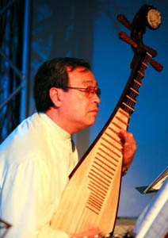

| |
|  |
|
Herr MU Sa, der Dizi- und Pipa-Meister, wurde 1944 in der chinesischen Provinz Liaoning geboren. Bereits als Kind erhielt er Unterricht auf der Bambus-Querflöte Dizi. Nach seiner Entdeckung bei einem Schüler-Festival spielte er dieses Instrument im Nationalorchester des Pionierpalastes der Stadt Peking.
Als Dizi-Spieler wurde MU Sa mit 17 Jahren Mitglied des Ensemble-Orchesters am Chinesischen Metallurgie-Kunsttheater, wo er später, im Jahr 1963 zu dessen Solo-Spieler aufstieg.
Während der intensiven Weiterbildungen auf der Dizi, nahm er zusätzlich ab 1957 Unterricht auf der Laute Pipa. So berühmte Musiker wie der Dizi-Meister Feng Zicun und der Pipa-Meister Li Tingsong zählen zu seinen Lehrern. In den folgenden Jahren erweiterte MU Sa sein musikalisches Repertoire mit dem Studium Komposition und Dirigieren und auch hier waren die angesehendsten Meister wie Zheng Shichun und Ouyang Libao seine Lehrer. |
|
|
| |
1965, im Vorfeld der Kulturrevolution, wurde MU Sa in die Provinz Gansu verbannt. Dort arbeitete er als Orchester-Leiter und Komponist beim Jiuquan-Ensemble. Für einige seiner Werke, u.a. "Lieder der Seele", "Flug im blauen Himmel", wurde er ausgezeichnet.
Neben seiner musikalisch-kompositorischen Tätigkeit wirkte MU Sa als Vorstandsmitglied der Gansu-Sektion des Chinesischen Musikerverbandes, dem er 1979 beigetreten war, an der Herausgabe der "Gesamtausgabe der Volkslieder Chinas" mit sowie an der Aufarbeitung des alten Dunhuang-Kulturerbes.
Seitdem er in Deutschland lebt, gibt MU Sa Musikunterricht und tritt auch selbst als Musiker auf.
Im Herbst 2001 hat er in München die Zupfinstrumentgruppe "Chinesische Musikgruppe Jiyuetian" gegründet.
|
|